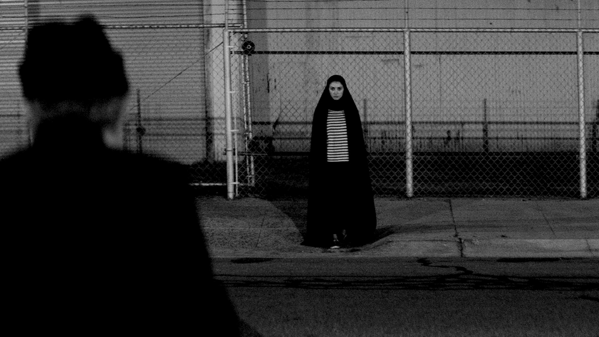

- Back
- Funny
- Home
Black Lady
sguro 8or9 yrs old ata ako nun. Gabi na nun. Nasa kwarto lng ako kase May sakit ako that time. Tapos patay pa yung ilaw nun Pero Ok lng kase bukas nman yung ilaw sa sala nun tsaka medjo naaaninagan nmn ng konti yung kwarto tsaka nkikita ko pa nmn sila papa mama pati yung mga kapatid ko na kumakain dun sa labas ng kwarto. Imaginin nyo na Lng na yung lamesa na pinagkakainan nila eh, dikit na dikit Lng dun sa pinto ng kwarto. Tapos Maya Maya, tinawag ako ni papa, "malou! Halika dto kain ka dto oh." Tapos umupo lng ako nun sa pinagkakahigaan ko para makita ko si papa. Tpos sabe ko ayoko po. Then, pagtapos ko sbhn yun. Napatingin ako sa gilid ng pinto ng kwarto nmn. Naiimagin nyo po ba? Alam mo yung pag binuksan mo yung pinto pwede ka pa magtago sa gilid nun? So yun na nga, May nakita ako dun sa gilid ng pinto ng kwarto namin, babae sya, naka belo na itim tpos nakasuot sya ng damit na itim. Nakayuko sya pero nakatingin sya skin ng masama tas namumula yung mata. Tinitigan ko sya ng matagal kase kinoconfirm ko kung totoo ba yung nakikita ko. Ni-rub ko na ren ung mata ko para mas confirm. Pero di pa ren nwawala yung black lady, kaya tinawag ko si papa nun, pero di ko alam kung bakit humina boses ko nun. Ilang beses ko na tinawag si papa pero di pa ren ako naririnig. Ti-nry ko ren tawagin ung mama tsaka kapatid ko. Pero di nila ako pinapansin. Tinignan ko ulit yung babae, nkatitig pa ren sya saken. Kaya nagdecide na lng ako na pumunta kela mama papa kht hirap ako makabangon. Then kinwento ko sa knila yung nkita ko. Pero binalewala lng nila. Kinabukasan. Narinig ko sila mama papa naguusap sa sala about dun sa kwento ko kagabe. Di nila alam na naririnig ko pa ren sila kht nasa kwarto ako. Sabi ni papa na yung babaeng kinekwento ko raw kagabi, is yung babaeng sumapi dun sa kasambahay nmn dati kaya nagdecide na umalis yung katulong namin dati. Sya ren daw yung dahilan kaya nagkasakit ako sa loob ng 2linggo. After 2months. Lumipat na kami ng bahay sa sapang palay, at tuluyan ng iniwan ang bahay nmn sa palmera. At ngayong malaki nako. Nung tinanong ko sila kung bkt ayaw nila paniwalaan ung kwento ko na yun, kase daw mas lalo lng daw ako matatakot. So. Yun lng po. Hehe di nmn nakakatakot noh? Hahaha salamat sa mga nagbasa Neto.